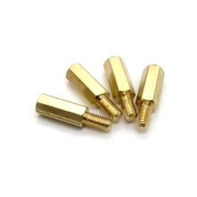

Стойка латунная М3, 11+6 мм
МеханикаКатегория
Механика
Тип
стойка дистанционная, шестигранная
Резьба
M3 × 0,5
Длина тела
11 мм
Длина резьбовой части
6 мм
Материал
латунь
Покрытие
никель
Шестигранник под ключ
5 мм
Назначение
разнесение и крепление печатных плат/модулей
Кратко
Это латунная дистанционная стойка-«пиллар» с резьбой M3, типоразмера 11+6 мм. Используется для крепления и разведения плат/узлов на заданное расстояние.
Описание
Такая стойка ставится между платами, корпусом или монтажной панелью и позволяет одновременно обеспечить механическое крепление и нужный зазор. Формат 11+6 мм обычно означает тело стойки 11 мм и выступающую резьбовую часть 6 мм. Латунь даёт хорошую жёсткость и удобна для винтового монтажа, а никелированное покрытие повышает стойкость к коррозии. Чаще всего такие стойки применяют в электронике, приборостроении и при сборке модулей на печатных платах.
Документация
id hw-2026-024